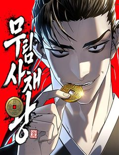
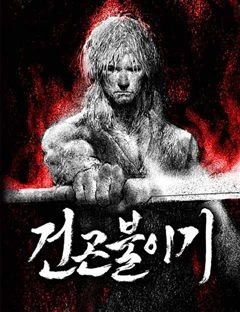
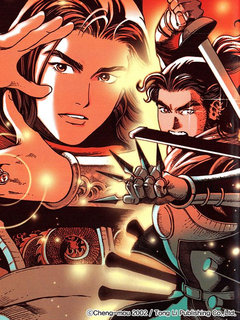

절대군림 같은 웹툰 추천

절대군림 · 박시대 / 장영훈
절대군림 재밌게 봤다면 이 웹툰들도 좋아할 거예요. 같은 장르이면서 천마, 무협/사극, 정통무협 같은 요소가 겹치는 작품을, 겹치는 요소가 많은 순서로 20개 골랐어요.
2026-10-06 기준 · 네이버웹툰·카카오웹툰·레진코믹스 · 성인 작품 제외
내 취향으로 직접 골라 추천받기 →-
1
 네이버웹툰
네이버웹툰시한부 천재가 살아남는 법
'스물을 넘기지 못하고 단명할 운명'을 타고난 정연신. 집안사람들 모두 연신을 홀대하지만, 직접 무공을 만들 정도로 그의 실력은 대단했다. 그러던 어느 날, 연신은 자신의 수명이 얼마 남지 않았음을 알게 되는데... 시한부 천재 정연신의 살아남기 위…
정통무협힘숨찐고인물동양무협네이버웹툰에서 보기 → -
2
 네이버웹툰
네이버웹툰천마는 조용히 살고싶다
'다음 생에는 반대로 살아보고 싶구나...' 오직 공포와 경외만이 전부였던 천마는 죽음의 순간 '증혼마공'을 제대로 익힐 수 있는 실마리를 얻는다. '증혼마공'은 타인의 혼백을 탐하기만 하는 게 아니었다. 그렇게 천마는 언제 죽을지 모르는 공자 벽태…
천마무협/사극고인물동양무협네이버웹툰에서 보기 → -
3
 네이버웹툰
네이버웹툰우주천마 3077
오랜 세월이 흘러 태산에 봉인된 천마가 눈을 떴을 때, 이미 인류는 방사능에 절여진 지구를 떠나 은하를 누비고 있었다.
천마힘숨찐고인물먼치킨무협네이버웹툰에서 보기 → -
4
 네이버웹툰
네이버웹툰환생천마
철혈의 맹주, 강호의 절대자 '천하진'. 가문의 수치라 불리는 망나니 '벽리단'의 몸으로 깨어나다! 취미는 사기도박, 검은 창고에 박아둔지 오래. 하루아침에 천하제일인에서 천하의 쓰레기가 된 그는 다시 검을 잡고, 전생에서 이루지 못한 경지에 오르고…
천마고인물동양먼치킨무협네이버웹툰에서 보기 → -
5
 네이버웹툰
네이버웹툰절대회귀
"나를 과거로 보내주시오." 이 시대에서 그를 죽일 수 없다면, 과거로 돌아가면 되리라. 시간을 거스를 수 있는 '회귀대법(回歸大法)'으로 그토록 원하던 과거로 회귀한 한 남자. 가족도, 친구도, 삶도, 모두 잃었던 '검무극(劍無極)'의 복수를 위한…
무협/사극고인물미친작화먼치킨무협네이버웹툰에서 보기 → · 절대회귀 같은 웹툰 → -
6
 네이버웹툰
네이버웹툰천마 아포칼립스
"천마가 하늘에 올랐으니,천하가 마도로 물들리라." 그렇게 무당파는 멸문했다. 마도천하가 도래하고 십년. 무당파의 유일한 생존자 유수는 사부 순양자의 살아남으라는 유언에 따라 마도천하를 전전하는데….
천마무협/사극정통무협무협네이버웹툰에서 보기 → -
7
 네이버웹툰
네이버웹툰시리도록 불꽃처럼
"강호로 내려가면 세상이 너의 적이 될 것이야..." 쇠락한 가문의 젊은 가주 '백무진'은 가세를 바로 잡기 위해 세상 밖으로의 여정을 준비한다. 세상은 그의 적이 될 것이라는 예견된 미래에도 불구하고, 무진은 외로운 싸움을 시작한다. <장씨세가 호…
무협/사극정통무협동양무협네이버웹툰에서 보기 → -
8
 네이버웹툰
네이버웹툰천재 무림 트레이너
대 역병 시대, 운영하던 헬스장이 망했다. 어떻게든 먹고 살아보려던 찰나 읽고 있던 무협지에 빙의했다. 도착해보니 천년 소림이라 좋아했는데, 이건 뭐? 다들 잘못된 지식과 운동법으로 몸이 다 망가져 있잖아?! 헬스 트레이너였던 내가 이걸 어떻게 참아…
무협/사극고인물동양먼치킨무협네이버웹툰에서 보기 → -
9네이버웹툰
전직지존
천하제일인에서 이름뿐인 한직 관리로 추락한 백소천. 무공도, 명예도 모두 잃었지만 그의 심지는 아직 꺾이지 않았으니... 바닥에서부터 다시 시작한 전직지존이 잃어버린 힘과 잊고 있던 시간을 되찾는다. 가장 강했던 사내의 두 번째 무림전설.
정통무협고인물동양무협네이버웹툰에서 보기 → -
10
 네이버웹툰
네이버웹툰장씨세가 호위무사
‘당신이 부른 것이오. 나란 사람을... ’ 은둔고수 광휘. 호위무사 되다. 웹소설 원작 웰메이드 무협 시대극!
무협/사극힘숨찐먼치킨무협네이버웹툰에서 보기 → · 장씨세가 호위무사 같은 웹툰 → -
11
 네이버웹툰
네이버웹툰곤륜에 용이 산다
한때 구파일방 중 하나였던 곤륜파의 제자가 된 교하. 사제들과 함께 곤륜파를 재건하기 위해서 고군분투한다. 근데, 뭔가 좀 이상하다. 제자들이 거지에 산적, 사기꾼에 도둑 출신이라고? 이거… 정파 맞나?
무협/사극정통무협먼치킨무협네이버웹툰에서 보기 → -
12
 네이버웹툰
네이버웹툰할배무사와 지존 손녀
죽을 날을 앞두고 미련없이 생을 마무리 하려던 순간 덮친 멸문지화! 유진산은 홀로 생존한 갓난 손녀 '유설'이 다 자랄 때까지만이라도 살아남기로 결심한다. 이미 늙어버린 몸으로 육아와 수련을 병행하며 눈물겨운 사투를 벌이는 동안, 어느새 무림지존의…
정통무협고인물먼치킨무협네이버웹툰에서 보기 → -
13네이버웹툰
사상최강
‘천하 십대 고수’라고 불리는 자들. 인간의 한계를 뛰어넘은 그들은 서로를 견제하며 힘의 균형과 세상의 질서를 유지해왔다. 바로 ‘백도현’ 그가 나타나기 전까지는! 내공만으로 사상최강의 힘을 가진 남자 백도현의 시원한 한 방!
정통무협동양먼치킨무협네이버웹툰에서 보기 → -
14
 네이버웹툰
네이버웹툰흑사
마교와의 마지막 전투에서 무림맹에게 배신당해 모든 전우를 잃은 흑사대장 정화… 악착같이 살아남은 그녀는 맹세한다. 전우들을 죽음으로 몰아넣은 마교와 무림맹 모두 없애버리겠다고. ”하늘이시여! 정녕 대의가 살아있다면… 죽어간 전우들의 한을 씻어낼 기회…
정통무협동양먼치킨무협네이버웹툰에서 보기 → -
15

네이버웹툰무림사채왕
검 한자루를 벼르는데도, 제자들을 먹이고 입히는데도 아니, 숨만쉬는데도 돈이 필요한 곳. 무림. 돈이 필요한가? 신용등급이 떨어졌나? 그럼 대륙전장으로 오세요. 무담보 당일 대출 승인. 갚을 돈이 없다고? 아. 걱정하지 마세요. 몸으로도 받습니다.…
고인물동양먼치킨무협네이버웹툰에서 보기 → -
16
 네이버웹툰
네이버웹툰나노마신
갖은 멸시와 목숨의 위협을 받던 마교의 사생아 천여운, 미래에서 나타난 후손이 천여운의 몸에 나노 머신을 주입한 후 그의 인생이 송두리째 바뀐다. 마교를 넘어 무림 최고의 자리에 오르기 위한 천여운의 거침없는 이야기가 시작된다!
천마먼치킨무협네이버웹툰에서 보기 → · 나노마신 같은 웹툰 → -
17
 네이버웹툰
네이버웹툰괴력 난신
살인에서 삶의 즐거움을 느끼는 '겸살귀', 정(正). 대 연목검장의 셋째공자 목경운과 똑같이 생긴 얼굴을 가졌는데... "나의 대역이 되어라. 그러면 옥에서 나갈 수 있게 해 주마." "그 기회. 제게 주시겠습니까?" '촤악-!!!' 셋째공자를 죽여…
천마먼치킨무협네이버웹툰에서 보기 → · 괴력 난신 같은 웹툰 → -
18
-
19

네이버웹툰건곤불이기
건곤불이기乾坤不異記 [하늘과 땅의 이야기는 다르지 않다.] 신검神劍과 마도魔刀 강호를 호령하는 두 고수. 그중 마도魔刀의 무가 평범한 아이였던 '반통미'에게 이어진다. 그저 바보처럼 성실하고 근면하기만한 아버지에게 불만을 가졌던 '반통미'. 하지만…
정통무협동양무협네이버웹툰에서 보기 → -
20

레진코믹스삼국군영전 화봉요원
불꽃의 봉황이 들판을 불사르네 '화봉요원'은 삼국지를 소재로 하는 가상역사 만화다. 삼국지는 한자를 쓰는 한자문화권으로 통하는 소위 극동 3국, 중국 일본 한국에서 공통적으로 하나의 모델처럼 활용되고 있으며, 삼국지의 각색물은 3국 모두에서 다양한…
정통무협동양무협레진코믹스에서 보기 →